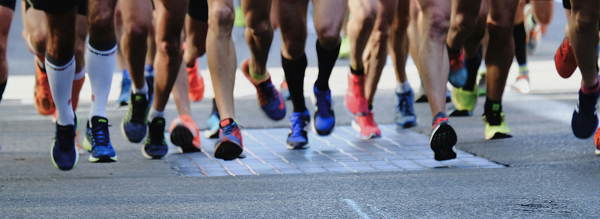
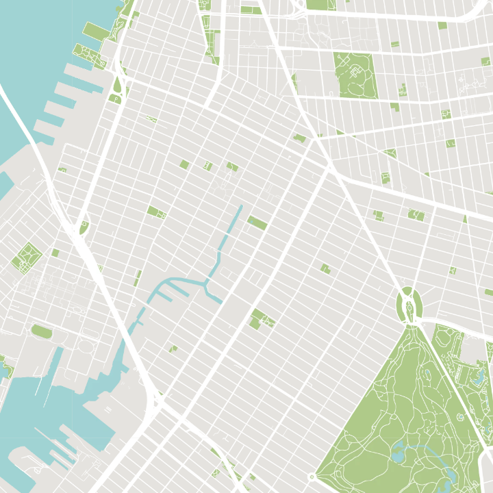
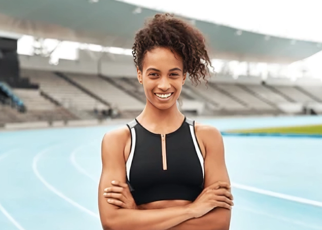
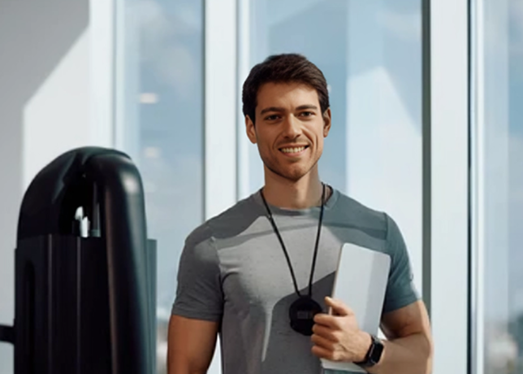

Curated, not sold to us.
Every brand we carry has been tested, worn and trusted by our team. If it doesn't perform in Glasgow weather, it doesn't earn a place.
We opened Paceline in 2015 with one goal — to build the running shop we'd always wanted. A decade in, we're still hand-picking every shoe, every layer and every accessory for runners just like us.

It wasn't 10K or 20 miles we needed to run. We were runners, just like you, and we wanted a shop that understood the journey. Our tried-and-tested range covers road, track and trail, apparel and accessories, with no compromise on performance or style.
Paceline is small and independent, but the community around it is anything but. When our team weren't out running, they were the people behind the gear. We put decades of running experience into every product, from kids' kit to adult race-day essentials across Glasgow.
— Rae & Jamie, FoundersEvery brand we carry has been tested, worn and trusted by our team. If it doesn't perform in Glasgow weather, it doesn't earn a place.
From run nights and local clubs to race-day support, Paceline exists to give runners a home.
From how we lay out shoes to how we pack an order, every detail is chosen to make your experience better.
Paceline opens its first Glasgow shop with a small but focused range.
Free gait analysis and community events become part of our rhythm.
Every Wednesday, runners meet for miles and coffee.
Twenty seasons in, we're still picking every product ourselves.
Find us in the heart of Glasgow for shoes, kit and a chat about your next run.


Former 800m athlete turned shopkeeper. Rae hand-picks every shoe on the wall and still runs the Wednesday club.

Sporty physio and coach with two decades in the sport. Runs free Saturday clinics and keeps the club, and store, moving.